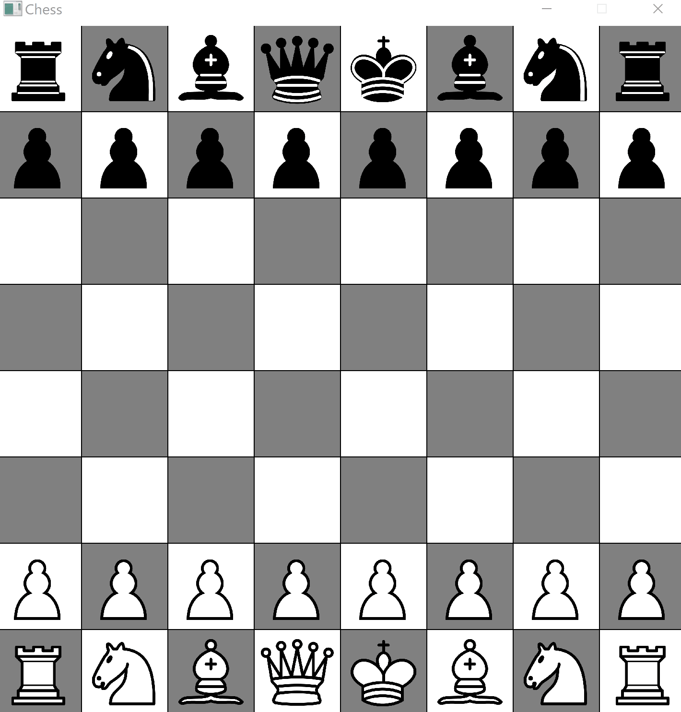
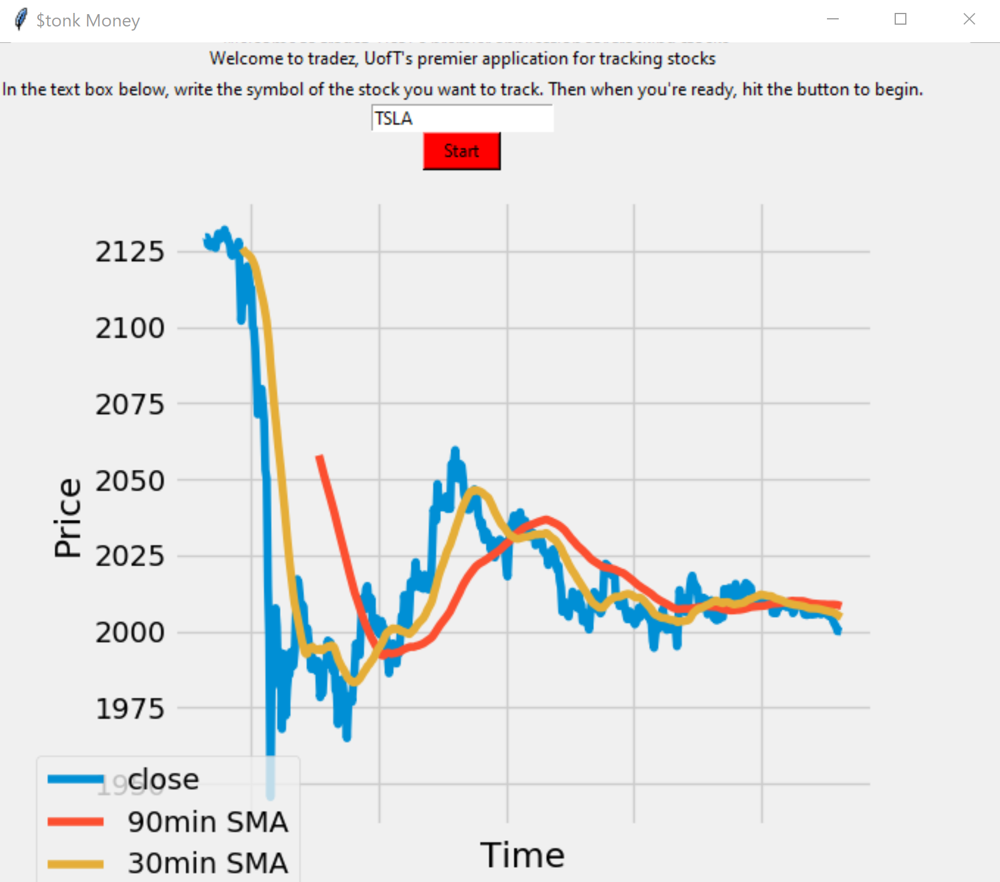

Projects
-

June 2020
Chess, Chess Player
- Wrote a program in C++ to facilitate a fully functional player versus player, and player versus computer, chess game complete with castling, enpassant, and unit promotion
- Applied the Min-Max algorithm with alpha-beta pruning to traverse possible game states and identify an optimal move
- Used dynamic programming, multi-threading and the quicksort algorithm to reduce computational time of decision tree traversal
- Depth 4 traversals are done in under 10 seconds, and depth 5 traversals are done in less than 1 minute
-

December 2019
Stock Day Trader
- Created an application in Python3 where a user can input the trade symbol of a stock on a Canadian or United States exchange and obtain a graph of the pricing data for the last 500 minutes of open market time
- Application guided buy and sell decisions of 6 day traders using the method of simple moving averages
- Utilized NumPy to convert raw data into simple moving averages, and Pandas to store data in an easily accessible way
- Used Matplotlib to automatically graphs close price as well as short term and long term simple moving averages